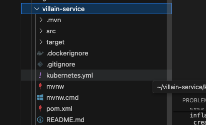
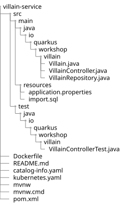

Developer Activity: Welcome on board in "Première Classe" - Drink your own champagne!
Please make sure you are logged in as a Developer with mon-user-dev / sWtbXGQy as you were guided to in the previous step. We advise you to use a private/incognito window to log out properly!
|

The home page dashboard
On the development home page, all tools needed are represented by different tabs such as :
-
Topology
-
Issues
-
CI
-
Image Registry
-
Docs etc..
It maps with the following integrations performed backstage ;)

It’s the entry point for everything !!
Our first mission is to add a new tab to monitor changes performed by our GitOps engine.
| We will explore tabs through the lab guide. But don’t be shy and feel free to open the tabs! |
👀 Observe 👀
Since the beginning of the workshop, we have used GitOps mechanisms thanks to ArgoCD. As a developer, it would be nice to get an overview of the objects we manage through our development environment without leaving our new hometown. The Internal Developer Portal ! To do so, we will enable the ArgoCD view in our dashboard, freshly instantiated. The CD shortcut in the dashboard will display this view :

✍️ Time to pratice ✍️
-
Let’s open the IDE cloud, Openshift Devspaces, and jump into the dashboard edit!

-
You may be asked to authenticate again. Please, proceed.
-
You should see the following page while the Dev Spaces is starting up:

-
Open the IDE cloud here :

-
Please open the catalog-info.yaml and uncomment the following annotation.
-
Remove the #
-

-
It must look like this. Be sure to respect the right YAML indentation

| To simplify the development flow, we’ll commit later with the changes done on our code base. The dashboard will be updated automatically. |
✍️ Time to pratice ✍️
Our workspace directory looks empty. In order to start the project quickly, the villain code base is located in an external GitLab repository. Let’s import it !
Open the terminal to import the zip file
-
Click on the "Burger icon" on the upper left side
-
Click on File > Terminal > Open a new terminal

-
Run the following command
wget https://gitlab-gitlab.apps.cluster-fs6v5.fs6v5.sandbox613.opentlc.com/peteam1/fullcodebase/-/raw/main/villain-service.zip -O villain-service.zip && unzip -o villain-service.zip && rm villain-service.zip
Confirm you have this directory :
👀 Observe 👀

Architecture
At the heart of the Super Hero application come also villains.
We need to expose a REST API allowing CRUD operations on super heroes. This microservice is also a classical microservice. It uses HTTP to expose a REST API, and it internally stores data in a database.
This service will be used by the fight microservice.
The codebase is provided but you will have to bring some guided modifications ;) !
Directory Structure
Once you bootstrap the project, you get the following directory structure with a few Java classes and other artifacts:

You get the following in the villain-service folder:
-
the Maven structure with a
pom.xml -
an
io.quarkus.workshop.villain.VillainControllercontroller exposed on/api/heroes -
an associated unit test
VillainControllerTest -
example
Dockerfilefiles for both native and JVM modes insrc/main/docker -
the
application.propertiesconfiguration file
👀 Observe 👀
Look at the pom.xml.
The pom.xml is basically the same as for heroes, apart from the fact that it contains a few more dependencies: quarkus-spring-web and quarkus-spring-data.
The Quarkus Spring compatibility extensions map Spring APIs to APIs in existing extensions that have already been optimized for fast startup, reduced memory utilization, and native compilation, like RestEasy and CDI.
Be aware that Quarkus Spring compatibility extensions do not utilize the Spring application context. For this reason, attempting to utilize additional Spring libraries will likely not work.
✍️ Time to pratice ✍️
The Controller
We get a rest controller, the VillainController.java.
This class is commented. Please uncomment it before exploring it.
The file is located in villain-service > src > main > java > io > quarkus > workshop > villain VillainController.java
Open it and remove the first part of the file:

And the last one:

This controller exposes CRUD operations to "villains" and uses Spring Web and Spring Data JPA annotations for handling HTTP requests and transactions:
-
@RestController: Marks the class as a RESTful controller where every method returns a JSON response instead of a view.
-
@RequestMapping: Specifies the base URL path (
/api/villains) for all the endpoints within this controller. It replaces the standard JAX-RS@Path -
@GetMapping, @PostMapping, @PutMapping, @DeleteMapping: These annotations define HTTP methods (GET, POST, PUT, DELETE) to map specific endpoints to CRUD operations.
Not Spring-specific annotations, but used like in the hero-service:
-
@Transactional: Ensures that the methods annotated with it are executed within a transaction context, which automatically commits or rolls back the transaction.
-
@Valid: Validates the input entity (
Villain) based on the constraints defined on its fields. -
@Context: Injects
UriInfo, which provides contextual information about the current URI to help in creating new URIs for created resources. -
@RunOnVirtualThread: Runs the controller on a virtual thread for better concurrency management. This is specific to the SmallRye library.
Accessing Database
As everything is in place, the import.sql file already contains all SQL statements to populate the villain database.
✍️ Time to pratice ✍️
Uncomment VillainRepository as you did previously
The file is located in villain-service > src > main > java > io > quarkus > workshop > villain >VillainRepository.java
Open it and remove the first of the file:
And the last one:
By extending the interface, we get the most relevant CRUD methods automatically.
You can check the VillainRepository.java code. It also contains a more specific method to retrieve a villain randomly from the database:
default Villain findRandom() {
var count = count();
var index = (int) (Math.random() * count);
return findAll().get(index);
}The Villain entity
Finally, we have an entity class representing the villains. == ✍️ Time to pratice ✍️
Uncomment Villain Entity as you did previously
The file is located in villain-service > src > main > java > io > quarkus > workshop > villain > Villain.java
Open it and remove the first of the file:
And the last one:
Tests
As in the case of the heroes, the tests could not be missing here. A test class is provided and contains the basic tests to ensure that the villain microservice works correctly.
You can check that everything works fine by starting the application in development mode.
✍️ Time to pratice ✍️
Run one of the following commands:
./mvnw quarkus:dev
or
quarkus dev
Note that the tests have been successfully run.
Also, you can curl the villains endpoint and you should get lots of villains
curl http://localhost:8080/api/villainsNow, we are ready to value our code with the trusted pipelines!